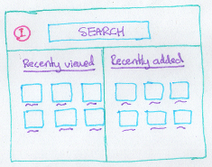

Published on 11 January 2012.
This is the first post in a series where I will reflect on and document the process of developing a real application. You will find these posts interesting if you want to know how I develop applications and learn what I think about. You will also learn about the technologies used.
I got the idea for the application when I read Pragmatic Thinking and Learning. In it, Andy Hunt, describes the importance of collecting and organizing your ideas.
I like using mind maps for storing thoughts outside my head, but lately I’ve experimented with recording thoughts on a portable audio recorder.
I have a bunch of ideas stored in different formats, and I need a way to organize them.
Organizing files in folders is limiting: you can not store files in multiple folders (unless you copy them) and you can only browse files based on one attribute: its location in the hierarchical folder structure.
I thought a tool where you can import your files and tag them would be more useful.
After getting the idea, I drew some sketches of the interface and came up with this:

The basic workflow is this: you import files into the application, they show up in the file list, and you can then open them from there. In addition, you can assign tags to files and then filter the file list on tags.
All my ideas can be found on the github wiki.
I envision myself using this application to organize many of my files. I also envision it being beautiful and fun to use. But unfortunately, implementing takes longer than imagining.
I plan to add simple, small, working features incrementally so that I can play with the application and learn what I want it to become.
This blog and the github page are good places to follow me in the development process.
What is Rickard working on and thinking about right now?
Every month I write a newsletter about just that. You will get updates about my current projects and thoughts about programming, and also get a chance to hit reply and interact with me. Subscribe to it below.